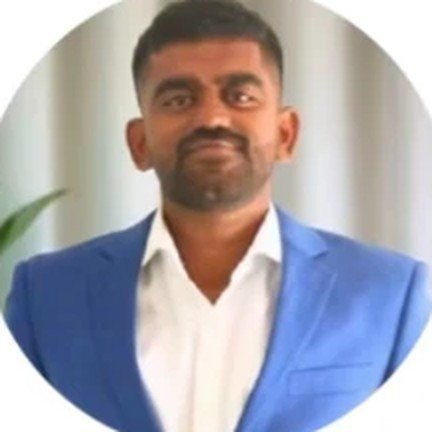
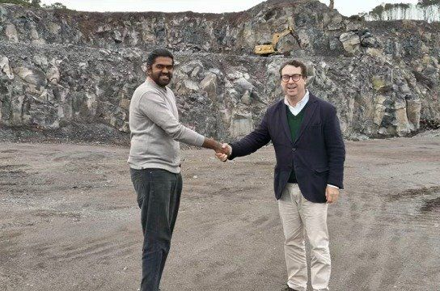
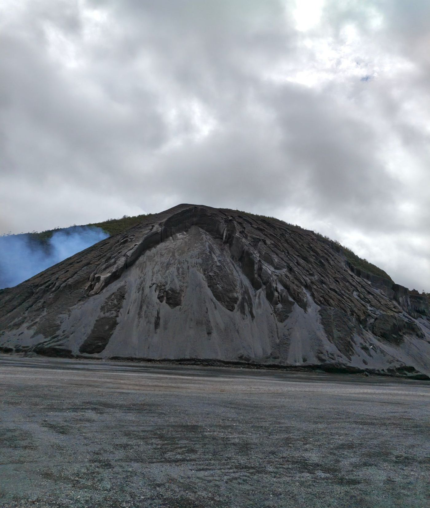

Field data and QA
Multi-site water quality testing (63 parameters) for UNICEF's WASH programme, and compliance testing of treatment systems at MGK Aqua. I know where field data goes wrong and how to catch it.

Carbon project data · Monitoring · Verification
I'm an environmental professional with a background in water quality testing, rural WASH programmes and carbon accounting. ISO 14064 GHG Lead Verifier, MSc University of Twente. Based in Portugal, working remotely.
What I bring
A credit is only as good as the household data, calculations and evidence behind it. This is the part of the cycle I've worked in.
Multi-site water quality testing (63 parameters) for UNICEF's WASH programme, and compliance testing of treatment systems at MGK Aqua. I know where field data goes wrong and how to catch it.
Built a draft carbon accounting model for an enhanced rock weathering project, with emission deductions and uncertainty. Benchmarked project drafts against Verra VM0046 and Isometric protocols.
Trained as an ISO 14064 GHG Lead Verifier and ISO 14001 Lead Auditor, so I build document sets the way a verifier reads them: traceable, consistent and complete.
Excel is my main tool, with SQL and Power BI for reporting, Python (pandas) for screening data, and working QGIS. Comfortable with remote teams, SOPs and feedback.
Selected work
2025 to present · São Miguel, Azores
Research Associate, ERW and CDR
An early-stage project to spread basalt fines from a local quarry on acidic volcanic pasture, where the rock weathers and locks CO₂ away as bicarbonate. A 100 ha pilot is proposed with a landowner and the INOVA laboratory.
Status: pre-incorporation. First baseline sampling is scheduled for December 2026. No measured removal results yet.


2018 to 2019 · India
Project Assistant
Drinking water and sanitation projects in rural and tea-estate communities, including solar-powered water pumps and solar stoves.
2019 to 2021 · India
Environmental Technologist
Designed, installed and commissioned 10+ water and wastewater treatment systems for residential and industrial sites.
2022 · Netherlands
Social impact assessment built on 100 interviews, with QGIS mapping and an Excel emissions and cost model for switching from natural gas to geothermal heat.
2024 to 2025 · Tamil Nadu, India
Drafted a project description for a proposed rock weathering project, benchmarked against Verra VM0046, Isometric and Puro.earth requirements. Not submitted.
Video
Experience
São Miguel, Azores. Sampling design, carbon accounting, partner coordination and funding applications.
Marketing Lead, Scores and Levels: Portugal, 2024 to 2025. Campaigns across Asian, African and Brazilian markets; KPI reporting in SQL, Excel and Power BI.
Technical Support Associate, Eurail: Netherlands, 2022 to 2023. CRM case tracking against SLA targets; process documentation for a remote team.
Energy management, digitalisation and sustainability. HOMER, RETScreen, SQL, Power BI, QGIS.
India. Water and wastewater treatment systems, compliance testing and regulatory reporting.
India. Rural water and sanitation, solar pumps and stoves, water quality testing, donor reporting.
EIA and applied GIS. Field project on coral bleaching in the Andaman Islands.
Certifications
Skills
Contact
Based in Portugal. Open to remote roles and to field work, including in Sub-Saharan Africa.